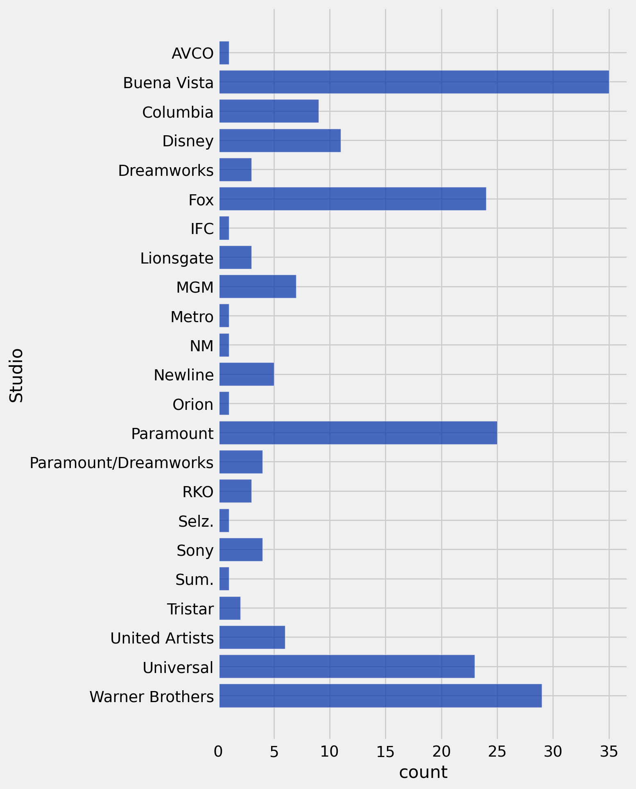
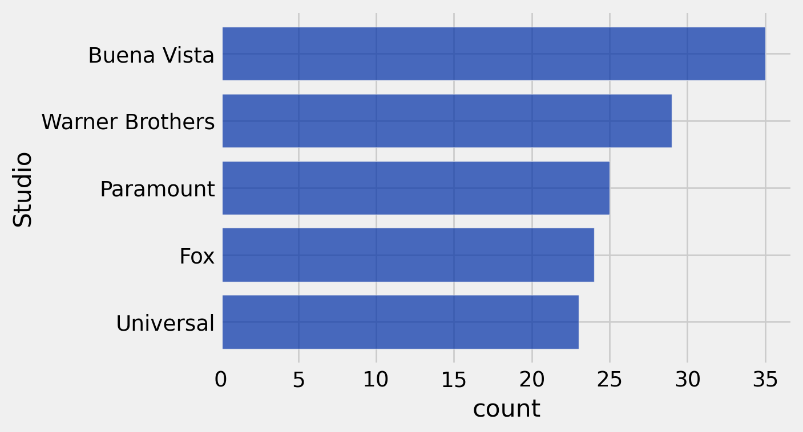
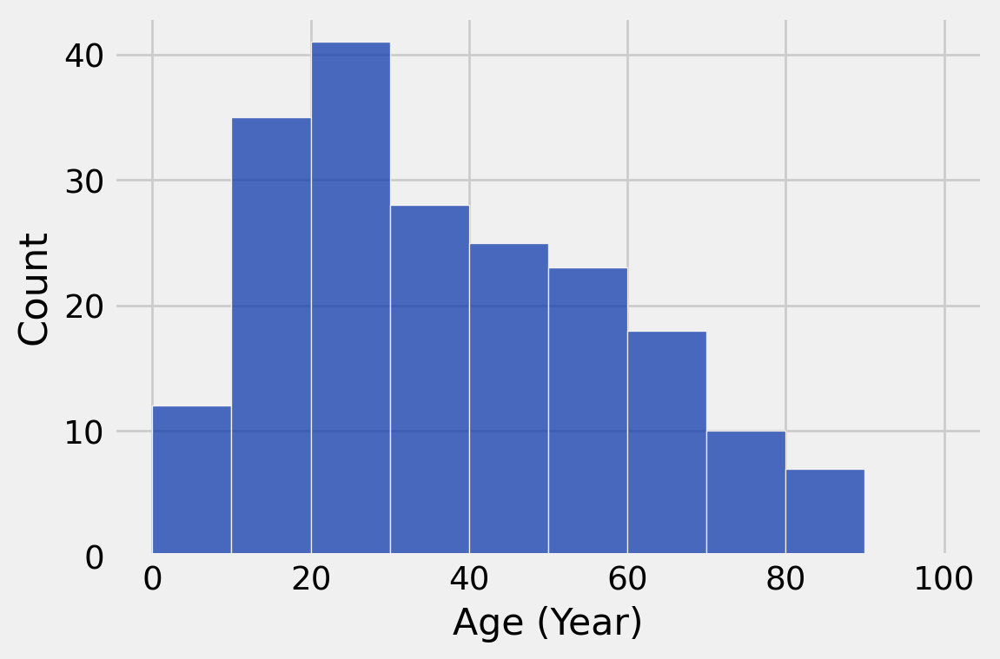
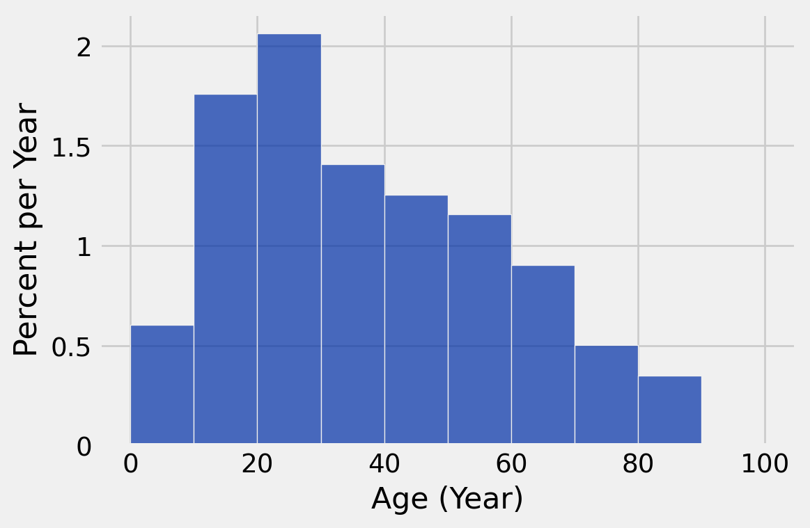
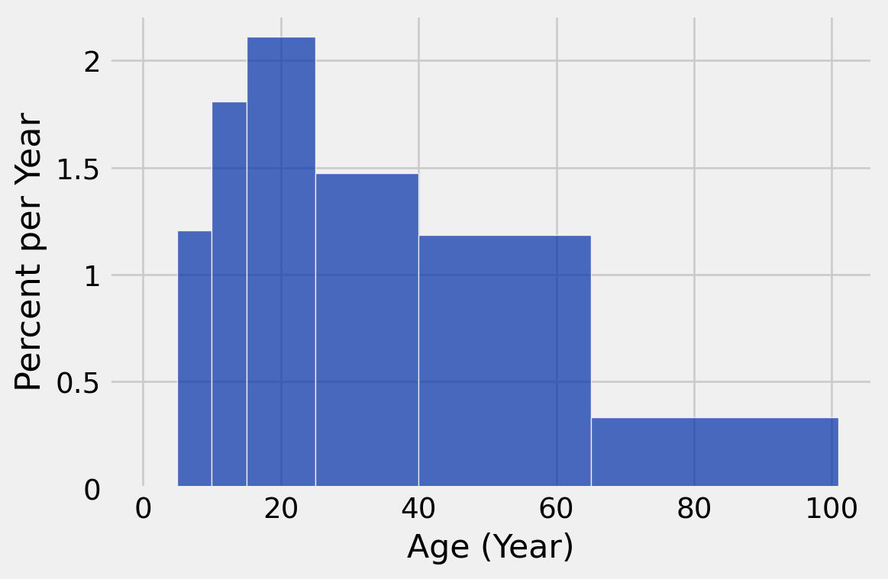
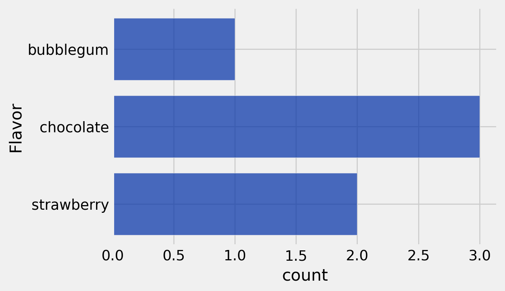
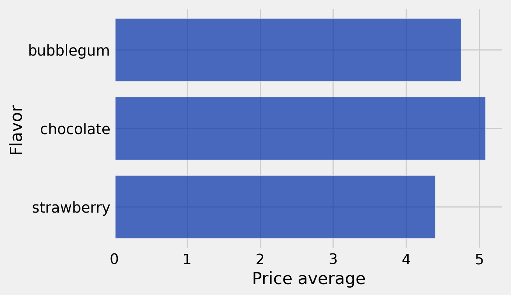
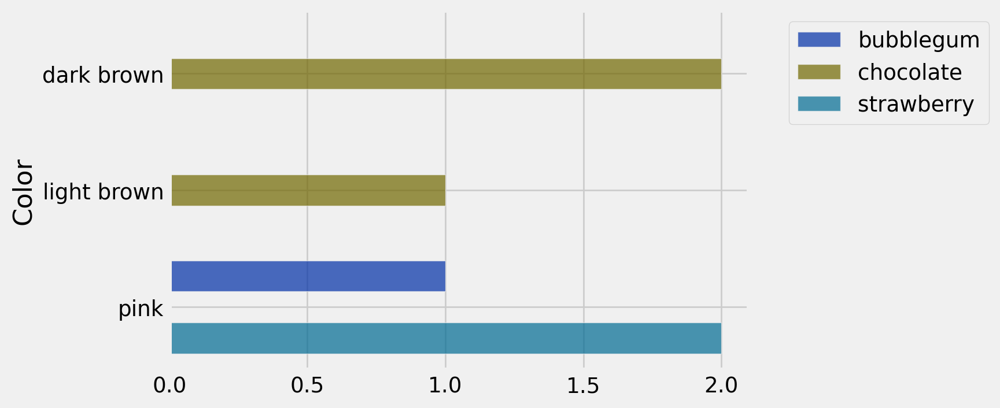

make_array(0,1,2,3,4,5,6)array([0, 1, 2, 3, 4, 5, 6])Lecture notebook
This is an export of the lecture notebook for today. Pay special attention to the Histogram section, where we demo the optional density argument to the hist Table method.
Equivalent:
make_array(0,1,2,3,4,5,6)array([0, 1, 2, 3, 4, 5, 6])np.arange(7)array([0, 1, 2, 3, 4, 5, 6])np.arange can take one, two, or three arguments. From the docstring, with some light editing:
arange([start,] stop[, step,])
Return evenly spaced values within a given interval.
``arange`` can be called with a varying number of positional arguments:
* ``arange(stop)``: Values are generated within the half-open interval
``[0, stop)`` (in other words, the interval including `start` but
excluding `stop`).
* ``arange(start, stop)``: Values are generated within the half-open
interval ``[start, stop)``.
* ``arange(start, stop, step)`` Values are generated within the half-open
interval ``[start, stop)``, with spacing between values given by
``step``.
Parameters
----------
start : integer or real, optional
Start of interval. The interval includes this value. The default
start value is 0.
stop : integer or real
End of interval. The interval does not include this value, except
in some cases where `step` is not an integer and floating point
round-off affects the length of `out`.
step : integer or real, optional
Spacing between values. For any output `out`, this is the distance
between two adjacent values, ``out[i+1] - out[i]``. The default
step size is 1. If `step` is specified as a position argument,
`start` must also be given.
Returns
-------
arange : ndarray
Array of evenly spaced values.
For floating point arguments, the length of the result is
``ceil((stop - start)/step)``. Because of floating point overflow,
this rule may result in the last element of `out` being greater
than `stop`.To read the above documentation in a Jupyter Notebook, run np.arange? in a code cell.
np.arange(9)array([0, 1, 2, 3, 4, 5, 6, 7, 8])np.arange(0, 9, 3)array([0, 3, 6])np.arange(5, 11)array([ 5, 6, 7, 8, 9, 10])np.arange(0, 1, 0.1)array([ 0. , 0.1, 0.2, 0.3, 0.4, 0.5, 0.6, 0.7, 0.8, 0.9])np.arange(20, 0, -2)array([20, 18, 16, 14, 12, 10, 8, 6, 4, 2])Title: title of the movieStudio: name of the studio that produced the movieGross: domestic box office gross in dollarsGross (Adjusted): the gross amount that would have been earned from ticket sales at 2016 pricesYear: release year of the movie.top_movies = Table.read_table('data/top_movies_2017.csv')
top_movies.show(6)| Title | Studio | Gross | Gross (Adjusted) | Year |
|---|---|---|---|---|
| Gone with the Wind | MGM | 198676459 | 1796176700 | 1939 |
| Star Wars | Fox | 460998007 | 1583483200 | 1977 |
| The Sound of Music | Fox | 158671368 | 1266072700 | 1965 |
| E.T.: The Extra-Terrestrial | Universal | 435110554 | 1261085000 | 1982 |
| Titanic | Paramount | 658672302 | 1204368000 | 1997 |
| The Ten Commandments | Paramount | 65500000 | 1164590000 | 1956 |
... (194 rows omitted)
Visualize the distribution of studios responsible for the highest grossing movies as of 2017.
studio_distribution = top_movies.group('Studio')
studio_distribution.show(6)| Studio | count |
|---|---|
| AVCO | 1 |
| Buena Vista | 35 |
| Columbia | 9 |
| Disney | 11 |
| Dreamworks | 3 |
| Fox | 24 |
... (17 rows omitted)
studio_distribution.barh('Studio')
Let’s revisualize this barchart to display just the top five studios. In the below code, note how .take is used with np.arange:
studio_distribution.sort('count', descending=True).take(np.arange(5)).barh('Studio')
print("Five studios are largely responsible for the highest grossing movies")Five studios are largely responsible for the highest grossing movies
Note that the above bar chart does not display the entire distribution of movies and studios—just the top five.
Visualize the distribution of how long the highest grossing movies as of 2017 have been out (in years).
ages = 2025 - top_movies.column('Year')
top_movies = top_movies.with_column('Age', ages)
top_movies| Title | Studio | Gross | Gross (Adjusted) | Year | Age |
|---|---|---|---|---|---|
| Gone with the Wind | MGM | 198676459 | 1796176700 | 1939 | 86 |
| Star Wars | Fox | 460998007 | 1583483200 | 1977 | 48 |
| The Sound of Music | Fox | 158671368 | 1266072700 | 1965 | 60 |
| E.T.: The Extra-Terrestrial | Universal | 435110554 | 1261085000 | 1982 | 43 |
| Titanic | Paramount | 658672302 | 1204368000 | 1997 | 28 |
| The Ten Commandments | Paramount | 65500000 | 1164590000 | 1956 | 69 |
| Jaws | Universal | 260000000 | 1138620700 | 1975 | 50 |
| Doctor Zhivago | MGM | 111721910 | 1103564200 | 1965 | 60 |
| The Exorcist | Warner Brothers | 232906145 | 983226600 | 1973 | 52 |
| Snow White and the Seven Dwarves | Disney | 184925486 | 969010000 | 1937 | 88 |
... (190 rows omitted)
Before visualizing anything, let’s look at the table itself.
top_movies.select('Title', 'Age').show(6)| Title | Age |
|---|---|
| Gone with the Wind | 86 |
| Star Wars | 48 |
| The Sound of Music | 60 |
| E.T.: The Extra-Terrestrial | 43 |
| Titanic | 28 |
| The Ten Commandments | 69 |
... (194 rows omitted)
min(ages), max(ages)(8, 104)If you want to make equally sized bins, np.arange() is a great tool to help you.
top_movies.hist('Age', bins = np.arange(0, 110, 10), unit = 'Year', density=False)
# default is density=True
top_movies.hist('Age', bins = np.arange(0, 110, 10), unit = 'Year')
Hm…what is this density parameter? This is our first instance of a Boolean data type, which takes on the values of True or False.
Verify that the bar areas are proportional to the counts in each bin:
top_movies_binned = top_movies.bin('Age', bins=np.arange(0, 110, 10))
top_movies_binned.show()| bin | Age count |
|---|---|
| 0 | 12 |
| 10 | 35 |
| 20 | 41 |
| 30 | 28 |
| 40 | 25 |
| 50 | 23 |
| 60 | 18 |
| 70 | 10 |
| 80 | 7 |
| 90 | 0 |
| 100 | 0 |
You can also pick your own bins. These are just bins that we picked out:
my_bins = make_array(0, 5, 10, 15, 25, 40, 65, 101)You may then use the bin table method to make a table having your bins, along with the number of observations within each.
binned_data = top_movies.bin('Age', bins = my_bins)
binned_data| bin | Age count |
|---|---|
| 0 | 0 |
| 5 | 12 |
| 10 | 18 |
| 15 | 42 |
| 25 | 44 |
| 40 | 59 |
| 65 | 24 |
| 101 | 0 |
Note: The last “bin” does not include any observations!!
top_movies.hist('Age', bins = my_bins, unit = 'Year')
I would not worry about the technical details of the code until next week! Right now, I just want you to see the different styles of bar chart that we might use.
\[\text{height} = \frac{\text{percent}}{\text{width}}\]
Add a column containing what percent of movies are in each bin (the area of each bin)
num_rows = top_movies.num_rows
binned_data = binned_data.with_column(
'Percent',
100*binned_data.column('Age count')/num_rows)
binned_data.show()| bin | Age count | Percent |
|---|---|---|
| 0 | 0 | 0 |
| 5 | 12 | 6 |
| 10 | 18 | 9 |
| 15 | 42 | 21 |
| 25 | 44 | 22 |
| 40 | 59 | 29.5 |
| 65 | 24 | 12 |
| 101 | 0 | 0 |
percent = binned_data.where('bin', 40).column('Percent').item(0)width = 65 - 40
height = percent / width
height1.18\[\text{height} = \frac{\text{percent}}{\text{width}}\]
Remember that the last row in the table does not represent a bin!
height_table = binned_data.take(np.arange(binned_data.num_rows - 1))
height_table | bin | Age count | Percent |
|---|---|---|
| 0 | 0 | 0 |
| 5 | 12 | 6 |
| 10 | 18 | 9 |
| 15 | 42 | 21 |
| 25 | 44 | 22 |
| 40 | 59 | 29.5 |
| 65 | 24 | 12 |
Remember np.diff?
bin_widths = np.diff(binned_data.column('bin'))bin_widthsarray([ 5, 5, 5, 10, 15, 25, 36])height_table = height_table.with_column('Width', bin_widths)
height_table| bin | Age count | Percent | Width |
|---|---|---|---|
| 0 | 0 | 0 | 5 |
| 5 | 12 | 6 | 5 |
| 10 | 18 | 9 | 5 |
| 15 | 42 | 21 | 10 |
| 25 | 44 | 22 | 15 |
| 40 | 59 | 29.5 | 25 |
| 65 | 24 | 12 | 36 |
height_table = height_table.with_column('Height',
height_table.column('Percent')/height_table.column('Width'))
height_table| bin | Age count | Percent | Width | Height |
|---|---|---|---|---|
| 0 | 0 | 0 | 5 | 0 |
| 5 | 12 | 6 | 5 | 1.2 |
| 10 | 18 | 9 | 5 | 1.8 |
| 15 | 42 | 21 | 10 | 2.1 |
| 25 | 44 | 22 | 15 | 1.46667 |
| 40 | 59 | 29.5 | 25 | 1.18 |
| 65 | 24 | 12 | 36 | 0.333333 |
To check our work one last time, let’s see if the numbers in the last column match the heights of the histogram:
top_movies.hist('Age', bins = my_bins, unit = 'Year')
cones = Table.read_table('data/cones.csv')
cones| Flavor | Color | Price |
|---|---|---|
| strawberry | pink | 3.55 |
| chocolate | light brown | 4.75 |
| chocolate | dark brown | 5.25 |
| strawberry | pink | 5.25 |
| chocolate | dark brown | 5.25 |
| bubblegum | pink | 4.75 |
flavor_table = cones.group('Flavor')
flavor_table| Flavor | count |
|---|---|
| bubblegum | 1 |
| chocolate | 3 |
| strawberry | 2 |
flavor_table.barh('Flavor')
cone_average_price_table = cones.drop('Color').group('Flavor', np.average)
cone_average_price_table| Flavor | Price average |
|---|---|
| bubblegum | 4.75 |
| chocolate | 5.08333 |
| strawberry | 4.4 |
cone_average_price_table.barh('Flavor')
(We will cover pivot in more detail next week)
cones_pivot_table = cones.pivot('Flavor','Color')
cones_pivot_table| Color | bubblegum | chocolate | strawberry |
|---|---|---|---|
| dark brown | 0 | 2 | 0 |
| light brown | 0 | 1 | 0 |
| pink | 1 | 0 | 2 |
cones_pivot_table.barh('Color')